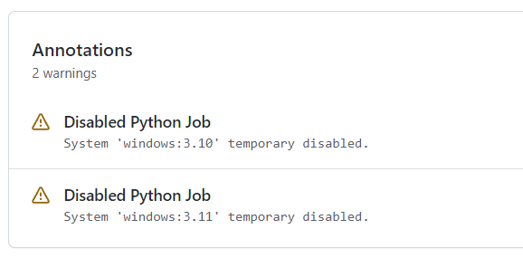

Parameters
The Parameters job template is a workaround for the limitations of GitHub Actions to handle global variables in
GitHub Actions workflows (see actions/runner#480).
It generates output parameters containing a list of artifact names and a job matrix to be used in later-running jobs.
Instantiation
Simple Example
The following instantiation example creates a Params job derived from job template Parameters version
@r6. It only requires a package_name parameter to create the artifact names.
jobs:
Params:
uses: pyTooling/Actions/.github/workflows/Parameters.yml@r6
with:
package_name: myPackage
UnitTesting:
uses: pyTooling/Actions/.github/workflows/UnitTesting.yml@r6
needs:
- Params
with:
jobs: ${{ needs.Params.outputs.python_jobs }}
Complex Example
The following instantiation example creates 3 jobs from the same template, but with differing input parameters.
The first UnitTestingParams job might be used to create a job matrix of unit tests. It creates the cross of
default systems (Windows, Ubuntu, macOS, macOS-ARM, MinGW64, UCRT64) and the given list of Python versions
including some mypy versions. In addition a list of excludes (marked as deletions) and includes
(marked as additions) is handed over resulting in the following combinations.
The second PerformanceTestingParams job might be used to create a job matrix for performance tests. Here a
pipeline might be limited to the latest two Python versions on a selected list of platforms.
The third PlatformTestingParams job might be used to create a job matrix for platform compatibility tests.
Here a pipeline might be limited to the latest Python version, but all available platforms.
jobs:
UnitTestingParams:
uses: pyTooling/Actions/.github/workflows/Parameters.yml@r6
with:
package_namespace: myFramework
package_name: Extension
python_version_list: '3.9 3.10 3.11 3.12 pypy-3.10 pypy-3.11'
system_list: 'ubuntu windows macos macos-arm mingw64 ucrt64'
include_list: 'ubuntu:3.13 macos:3.13 macos-arm:3.13'
exclude_list: 'windows:pypy-3.10 windows:pypy-3.11'
PerformanceTestingParams:
uses: pyTooling/Actions/.github/workflows/Parameters.yml@r6
with:
package_namespace: myFramework
package_name: Extension
python_version_list: '3.12 3.13'
system_list: 'ubuntu windows macos macos-arm'
PlatformTestingParams:
uses: pyTooling/Actions/.github/workflows/Parameters.yml@r6
with:
package_namespace: myFramework
package_name: Extension
python_version_list: '3.13'
system_list: 'ubuntu windows macos macos-arm mingw32 mingw64 clang64 ucrt64'
Version |
3.9 🔴 |
3.10 🟠 |
3.11 🟡 |
3.12 🟢 |
3.13 🟢 |
3.14.b1 🟣 |
pypy-3.9 🔴 |
pypy-3.10 🟠 |
pypy-3.11 🟡 |
|---|---|---|---|---|---|---|---|---|---|
Ubuntu 🐧 |
ubuntu:3.9 |
ubuntu:3.10 |
ubuntu:3.11 |
ubuntu:3.12 |
ubuntu:3.13 |
ubuntu:pypy-3.10 |
ubuntu:pypy-3.11 |
||
macOS (x86-64) 🍎 |
macos:3.9 |
macos:3.10 |
macos:3.11 |
macos:3.12 |
macos:3.13 |
macos:pypy-3.10 |
macos:pypy-3.11 |
||
macOS (aarch64) 🍏 |
macos-arm:3.9 |
macos-arm:3.10 |
macos-arm:3.11 |
macos-arm:3.12 |
macos-arm:3.13 |
macos:pypy-3.10 |
macos:pypy-3.11 |
||
Windows Server 🪟 |
windows:3.9 |
windows:3.10 |
windows:3.11 |
windows:3.12 |
windows:pypy-3.10 |
windows:pypy-3.11 |
|||
Windows Server 🪟 + MSYS 🟪 |
|||||||||
Windows Server 🪟 + MinGW32 ⬛ |
|||||||||
Windows Server 🪟 + MinGW64 🟦 |
mingw64:3.12 |
||||||||
Windows Server 🪟 + Clang32 🟫 |
|||||||||
Windows Server 🪟 + Clang64 🟧 |
|||||||||
Windows Server 🪟 + UCRT64 🟨 |
ucrt64:3.12 |
Parameter Summary
Goto input parameters
Parameter Name |
Required |
Type |
Default |
|---|---|---|---|
no |
string |
|
|
no |
string |
|
|
no |
string |
|
|
no |
string |
|
|
no |
string |
|
|
no |
string |
|
|
no |
string |
|
|
no |
string |
|
|
no |
string |
|
|
no |
string |
|
|
no |
string |
|
|
no |
string |
|
|
no |
string |
|
|
no |
string |
|
|
no |
string |
|
|
no |
string |
|
|
no |
number |
|
Goto secrets
This job template needs no secrets.
Goto output parameters
Result Name |
Type |
Description |
|---|---|---|
string |
||
string |
||
string |
||
string |
||
string (JSON) |
||
string (JSON) |
Input Parameters
ubuntu_image_version
- Type:
string
- Required:
no
- Default Value:
'24.04'- Possible Values:
See actions/runner-images - Available Images for available Ubuntu image versions.
- Description:
Version of the Ubuntu image used to run the job.
Note
Unfortunately, GitHub Actions has only a limited set of functions, thus, the usual Ubuntu image name like
'ubuntu-24.04'can’t be split into image name and image version.
name
- Type:
string
- Required:
no
- Default Value:
''- Possible Values:
Any valid artifact name.
- Description:
Prefix used to generate artifact names. Usually, the name of the Python package.
In case this parameter is an empty string, the artifact prefix is derived from package_name if the package is a simple Python package, or from package_namespace and package_name, if the package is a Python namespace package.
package_namespace
- Type:
string
- Required:
no
- Default Value:
''- Possible Values:
Any valid Python namespace.
- Description:
In case the package is a Python namespace package, the name of the library’s or package’s namespace needs to be specified using this parameter.
In case of a simple Python package, this parameter must be specified as an empty string (''), which is the default.
This parameter is used to derive name, if it’s an empty string.- Example:
Example Instantiation
name: Pipeline jobs: ConfigParams: uses: pyTooling/Actions/.github/workflows/Parameters.yml@r6 with: package_namespace: myFramework package_name: Extension
Example Directory Structure
📂ProjectRoot/ 📂myFramework/ 📂Extension/ 📦SubPackage/ 🐍__init__.py 🐍SubModuleA.py 🐍__init__.py 🐍ModuleB.py
package_name
- Type:
string
- Required:
no
- Default Value:
''- Possible Values:
Any valid Python package name.
- Description:
In case of a simple Python package, this package’s name is specified using this parameter.
In case the package is a Python namespace package, the parameter package_namespace must be specified, too.
This parameter is used to derive name, if it’s an empty string.- Example:
Example Instantiation
name: Pipeline jobs: ConfigParams: uses: pyTooling/Actions/.github/workflows/Parameters.yml@r6 with: package_name: myPackage
Example Directory Structure
📂ProjectRoot/ 📂myFramework/ 📦SubPackage/ 🐍__init__.py 🐍SubModuleA.py 🐍__init__.py 🐍ModuleB.py
python_version
- Type:
string
- Required:
no
- Default Value:
'3.14'- Possible Values:
Any valid Python version conforming to the pattern
<major>.<minor>orpypy-<major>.<minor>.
See actions/python-versions - available Python versions and actions/setup-python - configurable Python versions.- Description:
Python version used as default for other jobs requiring a single Python version.
In case python_version_list is an empty string, this version is used to populate the version list.
python_version_list
- Type:
string
- Required:
no
- Default Value:
'3.10 3.11 3.12 3.13 3.14'- Possible Values:
A space separated list of valid Python versions conforming to the pattern
<major>.<minor>orpypy-<major>.<minor>.
See actions/python-versions - available Python versions and actions/setup-python - configurable Python versions.- Description:
The list of space-separated Python versions used for Python variation testing.
Possible values
3.8,3.9,3.10,3.11,3.12,3.13,3.14pypy-3.7,pypy-3.8,pypy-3.9,pypy-3.10,pypy-3.11
Icon
Version
Maintained until
Comments
⚫
3.8
2024.10
outdated
🔴
3.9
2025.10
🟠
3.10
2026.10
🟡
3.11
2027.10
🟢
3.12
2028.10
🟢
3.13
2029.10
latest CPython
🟣
3.14
2030.10
Python 3.14 alpha, beta (or RC) will be used.
⟲⚫
pypy-3.7
????.??
⟲⚫
pypy-3.8
????.??
⟲🔴
pypy-3.9
????.??
⟲🟠
pypy-3.10
????.??
⟲🟡
pypy-3.11
????.??
latest PyPy
system_list
- Type:
string
- Required:
no
- Default Value:
'ubuntu windows macos macos-arm mingw64 ucrt64'- Possible Values:
A space separated list of system names.
- Description:
The list of space-separated systems used for application testing.
Possible values
Native systems:
ubuntu,windows,macosMSYS2:
msys,mingw32,mingw64,clang32,clang64,ucrt64
Icon
System
Used version
Comments
🪟
Windows
Windows Server 2025 (latest)
🐧
Ubuntu
Ubuntu 24.04 (LTS) (latest)
🍎
macOS
macOS Ventura 13 (latest)
While this marked latest, macOS Ventura 13 is already provided.
🍏
macOS-arm
macOS Sonoma 14 (latest)
While this marked latest, macOS Ventura 13 is already provided.
🟪
MSYS
⬛
MinGW32
🟦
MinGW64
🟫
Clang32
🟧
Clang64
🟨
UCRT64
Source: Images provided by GitHub
include_list
- Type:
string
- Required:
no
- Default Value:
''- Possible Values:
A space separated list of
<system>:<python_version>tuples.- Description:
List of space-separated
<system>:<python_version>tuples to be included into the list of test variants.- Example:
jobs: ConfigParams: uses: pyTooling/Actions/.github/workflows/Parameters.yml@r6 with: package_name: myPackage include_list: "ubuntu:3.11 macos:3.11"
exclude_list
- Type:
string
- Required:
no
- Default Value:
'windows-arm:3.9 windows-arm:3.10'- Possible Values:
A space separated list of
<system>:<python_version>tuples.- Description:
List of space-separated
<system>:<python_version>tuples to be excluded from the list of test variants.- Example:
jobs: ConfigParams: uses: pyTooling/Actions/.github/workflows/Parameters.yml@r6 with: package_name: myPackage exclude_list: "windows:pypy-3.8 windows:pypy-3.9"
disable_list
- Type:
string
- Required:
no
- Default Value:
'windows-arm:pypy-3.10 windows-arm:pypy-3.11'- Possible Values:
A space separated list of
<system>:<python_version>tuples.- Description:
List of space-separated
<system>:<python_version>tuples to be temporarily disabled from the list of test variants.
Each disabled item creates a warning in the workflow log.- Warning Example:
jobs: ConfigParams: uses: pyTooling/Actions/.github/workflows/Parameters.yml@r6 with: package_name: myPackage disable_list: "windows:3.10 windows:3.11"

{kind=link}
ubuntu_image
- Type:
string
- Required:
no
- Default Value:
'ubuntu-24.04'- Possible Values:
See actions/runner-images - Available Images for available Ubuntu image versions.
- Description:
Name of the Ubuntu x86-64 image and version used to run a Ubuntu jobs when selected via system_list.
ubuntu_arm_image
- Type:
string
- Required:
no
- Default Value:
'ubuntu-24.04-arm'- Possible Values:
See actions/partner-runner-images - Available Images for available Ubuntu ARM image versions.
- Description:
Name of the Ubuntu aarch64 image and version used to run a Ubuntu ARM jobs when selected via system_list.
windows_image
- Type:
string
- Required:
no
- Default Value:
'windows-2025'- Possible Values:
- Description:
Name of the Windows Server x86-64 image and version used to run a Windows jobs when selected via system_list.
windows_arm_image
- Type:
string
- Required:
no
- Default Value:
'windows-11-arm'- Possible Values:
- Description:
Name of the Windows aarch64 image and version used to run a Windows ARM jobs when selected via system_list.
macos_intel_image
- Type:
string
- Required:
no
- Default Value:
'macos-13'- Possible Values:
- Description:
Name of the macOS x86-64 image and version used to run a macOS Intel jobs when selected via system_list.
macos_arm_image
- Type:
string
- Required:
no
- Default Value:
'macos-15'- Possible Values:
- Description:
Name of the macOS aarch64 image and version used to run a macOS ARM jobs when selected via system_list.
pipeline-delay
- Type:
number
- Required:
no
- Default Value:
0- Possible Values:
Any integer number.
- Description:
Slow down this job, to delay the startup of the GitHub Action pipline.
Secrets
This job template needs no secrets.
Outputs
python_version
- Type:
string
- Default Value:
'3.14'- Possible Values:
Any valid Python version conforming to the pattern
<major>.<minor>orpypy-<major>.<minor>.- Description:
Returns
A single string parameter representing the default Python version that should be used across multiple jobs in the same pipeline.
Such a parameter is needed as a workaround, because GitHub Actions doesn’t support proper handling of global pipeline variables. Thus, this job is used to compute an output parameter that can be reused in other jobs.
- Example:
jobs: Params: uses: pyTooling/Actions/.github/workflows/Parameters.yml@r6 with: name: pyTooling CodeCoverage: uses: pyTooling/Actions/.github/workflows/CoverageCollection.yml@r6 needs: - Params with: python_version: ${{ needs.Params.outputs.python_version }}
package_fullname
- Type:
string
- Description:
Returns the full package name composed from package_namespace and package_name.
- Example:
myFramework.Extension
package_directory
- Type:
string
- Description:
Returns the full package path composed from package_namespace and package_name.
- Example:
myFramework/Extension
artifact_basename
- Type:
string
- Description:
Returns the basename (prefix) of all artifact names
. The basename is either name if set, otherwise its package_fullname.- Example:
myFramework.Extension
artifact_names
- Type:
string (JSON)
- Description:
Returns a JSON dictionary of artifact names sharing a common prefix (see name).
As artifacts are handed from jo to job, a consistent naming scheme is advised to avoid duplications and naming artifacts by hand. This technique solves again the problem of global variables in GitHub Action YAMl files and the need for assigning the same value (here artifact name) to multiple jobs templates.The supported artifacts are:
- unittesting_xml:
UnitTesting XML summary report
- unittesting_html:
UnitTesting HTML summary report
- perftesting_xml:
PerformanceTesting XML summary report
- benchtesting_xml:
Benchmarking XML summary report
- apptesting_xml:
ApplicationTesting XML summary report
- codecoverage_sqlite:
Code Coverage internal database (SQLite)
- codecoverage_xml:
Code Coverage Cobertura XML report
- codecoverage_json:
Code Coverage Coverage.py JSON report
- codecoverage_html:
Code Coverage HTML report
- statictyping_cobertura:
Static Type Checking Cobertura XML report
- statictyping_junit:
Static Type Checking JUnit XML report
- statictyping_html:
Static Type Checking HTML report
- package_all:
Packaged Python project (multiple formats)
- documentation_html:
Documentation in HTML format
- documentation_latex:
Documentation in LaTeX format
- documentation_pdf:
Documentation in PDF format
- Example:
jobs: Params: uses: pyTooling/Actions/.github/workflows/Parameters.yml@r6 with: name: pyTooling Coverage: uses: pyTooling/Actions/.github/workflows/UnitTesting.yml@r6 needs: - Params with: unittest_xml_artifact: ${{ fromJson(needs.Params.outputs.artifact_names).unittesting_xml }}
python_jobs
- Type:
string (JSON)
- Description:
Returns a JSON array of job descriptions, wherein each job description is a dictionary providing the following key-value pairs:
- sysicon:
icon to display
- system:
name of the system
- runs-on:
virtual machine image and base operating system
- runtime:
name of the runtime environment if not running natively on the VM image
- shell:
name of the shell
- pyicon:
icon for CPython or pypy
- python:
Python version
- envname:
full name of the selected environment
- Example:
jobs: Params: uses: pyTooling/Actions/.github/workflows/Parameters.yml@r6 with: name: pyDummy UnitTesting: uses: pyTooling/Actions/.github/workflows/UnitTesting.yml@r6 needs: - Params with: jobs: ${{ needs.Params.outputs.python_jobs }}
- Usage:
The generated JSON array can be unpacked using the
fromJson(...)function in a job’s matrixstrategy:matrix:includelike this:name: Unit Testing (Matrix) on: workflow_call: inputs: jobs: required: true type: string jobs: UnitTesting: name: ${{ matrix.sysicon }} ${{ matrix.pyicon }} Unit Tests using Python ${{ matrix.python }} runs-on: ${{ matrix.runs-on }} strategy: matrix: include: ${{ fromJson(inputs.jobs) }} defaults: run: shell: ${{ matrix.shell }} steps: - name: 🐍 Setup Python ${{ matrix.python }} if: matrix.system != 'msys2' uses: actions/setup-python@v4 with: python-version: ${{ matrix.python }}
- Debugging:
The job prints debugging information like system × Python version × environment combinations as well as the generated JSON array in the job’s log.
[ {"sysicon": "🐧", "system": "ubuntu", "runs-on": "ubuntu-24.04", "runtime": "native", "shell": "bash", "pyicon": "🔴", "python": "3.9", "envname": "Linux (x86-64)" }, {"sysicon": "🐧", "system": "ubuntu", "runs-on": "ubuntu-24.04", "runtime": "native", "shell": "bash", "pyicon": "🟠", "python": "3.10", "envname": "Linux (x86-64)" }, {"sysicon": "🐧", "system": "ubuntu", "runs-on": "ubuntu-24.04", "runtime": "native", "shell": "bash", "pyicon": "🟡", "python": "3.11", "envname": "Linux (x86-64)" }, {"sysicon": "🐧", "system": "ubuntu", "runs-on": "ubuntu-24.04", "runtime": "native", "shell": "bash", "pyicon": "🟢", "python": "3.12", "envname": "Linux (x86-64)" }, {"sysicon": "🐧", "system": "ubuntu", "runs-on": "ubuntu-24.04", "runtime": "native", "shell": "bash", "pyicon": "🟢", "python": "3.13", "envname": "Linux (x86-64)" }, {"sysicon": "🪟", "system": "windows", "runs-on": "windows-2025", "runtime": "native", "shell": "pwsh", "pyicon": "🔴", "python": "3.9", "envname": "Windows (x86-64)" }, {"sysicon": "🪟", "system": "windows", "runs-on": "windows-2025", "runtime": "native", "shell": "pwsh", "pyicon": "🟠", "python": "3.10", "envname": "Windows (x86-64)" }, {"sysicon": "🪟", "system": "windows", "runs-on": "windows-2025", "runtime": "native", "shell": "pwsh", "pyicon": "🟡", "python": "3.11", "envname": "Windows (x86-64)" }, {"sysicon": "🪟", "system": "windows", "runs-on": "windows-2025", "runtime": "native", "shell": "pwsh", "pyicon": "🟢", "python": "3.12", "envname": "Windows (x86-64)" }, {"sysicon": "🪟", "system": "windows", "runs-on": "windows-2025", "runtime": "native", "shell": "pwsh", "pyicon": "🟢", "python": "3.13", "envname": "Windows (x86-64)" }, {"sysicon": "🍎", "system": "macos", "runs-on": "macos-13", "runtime": "native", "shell": "bash", "pyicon": "🔴", "python": "3.9", "envname": "macOS (x86-64)" }, {"sysicon": "🍎", "system": "macos", "runs-on": "macos-13", "runtime": "native", "shell": "bash", "pyicon": "🟠", "python": "3.10", "envname": "macOS (x86-64)" }, {"sysicon": "🍎", "system": "macos", "runs-on": "macos-13", "runtime": "native", "shell": "bash", "pyicon": "🟡", "python": "3.11", "envname": "macOS (x86-64)" }, {"sysicon": "🍎", "system": "macos", "runs-on": "macos-13", "runtime": "native", "shell": "bash", "pyicon": "🟢", "python": "3.12", "envname": "macOS (x86-64)" }, {"sysicon": "🍎", "system": "macos", "runs-on": "macos-13", "runtime": "native", "shell": "bash", "pyicon": "🟢", "python": "3.13", "envname": "macOS (x86-64)" }, {"sysicon": "🍏", "system": "macos-arm", "runs-on": "macos-15", "runtime": "native", "shell": "bash", "pyicon": "🔴", "python": "3.9", "envname": "macOS (aarch64)" }, {"sysicon": "🍏", "system": "macos-arm", "runs-on": "macos-15", "runtime": "native", "shell": "bash", "pyicon": "🟠", "python": "3.10", "envname": "macOS (aarch64)" }, {"sysicon": "🍏", "system": "macos-arm", "runs-on": "macos-15", "runtime": "native", "shell": "bash", "pyicon": "🟡", "python": "3.11", "envname": "macOS (aarch64)" }, {"sysicon": "🍏", "system": "macos-arm", "runs-on": "macos-15", "runtime": "native", "shell": "bash", "pyicon": "🟢", "python": "3.12", "envname": "macOS (aarch64)" }, {"sysicon": "🍏", "system": "macos-arm", "runs-on": "macos-15", "runtime": "native", "shell": "bash", "pyicon": "🟢", "python": "3.13", "envname": "macOS (aarch64)" }, {"sysicon": "🪟🟦", "system": "msys2", "runs-on": "windows-2025", "runtime": "MINGW64", "shell": "msys2 {0}", "pyicon": "🟢", "python": "3.12", "envname": "Windows+MSYS2 (x86-64) - MinGW64"}, {"sysicon": "🪟🟨", "system": "msys2", "runs-on": "windows-2025", "runtime": "UCRT64", "shell": "msys2 {0}", "pyicon": "🟢", "python": "3.12", "envname": "Windows+MSYS2 (x86-64) - UCRT64" } ]
Optimizations
This template offers no optimizations (reduced job runtime).
Nontheless, the generated output python_jobs is influenced by many input parameters generating \(N^2\) many Python job combinations, which in turn will influence the overall pipeline runtime and how many jobs (parallel VMs) are needed to execute the matrix.
Hint
Some VM images (macOS, Windows) have parallelism limitations and run slower then Ubuntu-based jobs. Additionally, environments like MSYS2 require an additional setup time increasing a jobs runtime significantly.